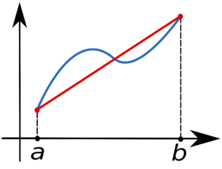
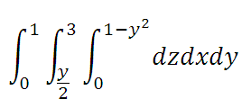

C4_U4: 4.Diferenciación e integración numérica.
4.1 Diferenciación numérica.
El cálculo de la derivada de una función puede ser un proceso "difícil" ya sea por lo complicado de la
definición analítica de la función o por que esta se conoce unicamente en un número discreto de puntos. (Este es
el caso si la función representa el resultado de algún experimento). En esta lección estudiaremos técnicas para
aproximar las derivadas de una función y veremos el análisis de error de dichas formulas.
4.2 Integración numérica.

En análisis numérico, la integración numérica constituye una amplia gama de algoritmos para calcular el valor
numérico de una integral definida y, por extensión, el término se usa a veces para describir algoritmos
numéricos para resolver ecuaciones diferenciales.
Hay varias razones para llevar a cabo la integración numérica. La principal puede ser la imposibilidad de
realizar la integración de forma analítica. Es decir, integrales que requerirían un gran conocimiento y manejo
de matemática avanzada pueden ser resueltas de una manera más sencilla mediante métodos numéricos. Incluso
existen funciones integrables pero cuya primitiva no puede ser calculada, siendo la integración numérica de
vital importancia.
La solución analítica de una integral nos arrojaría una solución exacta mientras que la solución numérica nos
daría una solución aproximada.
Definición
La integración numérica es una técnica que se puede usar para aproximar el valor de la integral de una función
que no sea posible anti diferenciar (integrar).Con el objeto de integrar numéricamente la integral comprendida
en el intervalo cerrado [a, b], lo podemos hacer a través de dos métodos de integración numérica: la Regla del
trapecio y la Regla de Simpson.
4.3 Integración múltiple.

El cálculo de varias variables es una extensión del cálculo bidimensional o de una variable a más de una
dimensión. Comúnmente utilizado en el espacio tridimensional. Por eso, así como la derivación tiene su
abstracción multidimensional, la integración también la tiene.
La integración múltiple es el proceso de encontrar las primitivas de una función de varias variables respecto a
todas las variables independientes que dicha función posea. Generalmente la aplicación más directa es la
integral definida, utilizada para encontrar áreas de regiones y volúmenes de superficies en el espacio..
4.4 Aplicaciones.
1 topógrafo podría necesitar conocer el área de un campo limitado.
2 un topógrafo podría necesitar conocer el área de un campo limitado.
3 un ingeniero en estructuras necesitara determinar la fuerza neta ejercida por un viento no uniforme
que sopla contra un lado de un rascacielos.